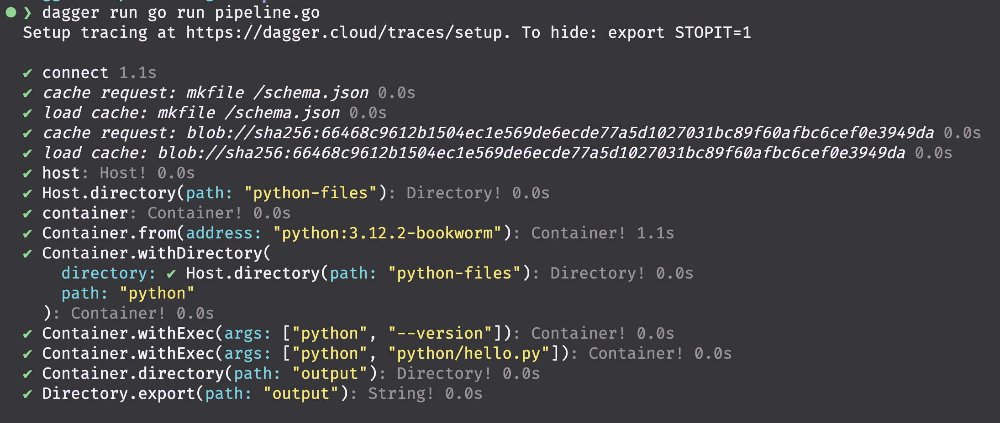

Run the pipeline locally
Open the terminal and nagivate to the directory where the pipeline.go file is located and run:
dagger run go run pipeline.go
That is it!
The very first time you run a pipeline, Dagger will download the necessary Docker images and set up the environment. This may take a few minutes.
Expected output

Next, let's run the pipeline in a GitHub Actions workflow.